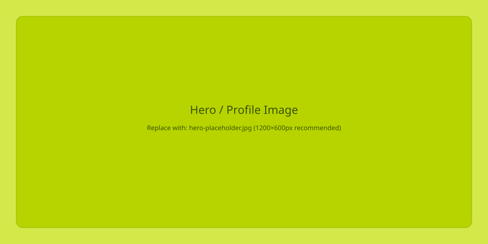
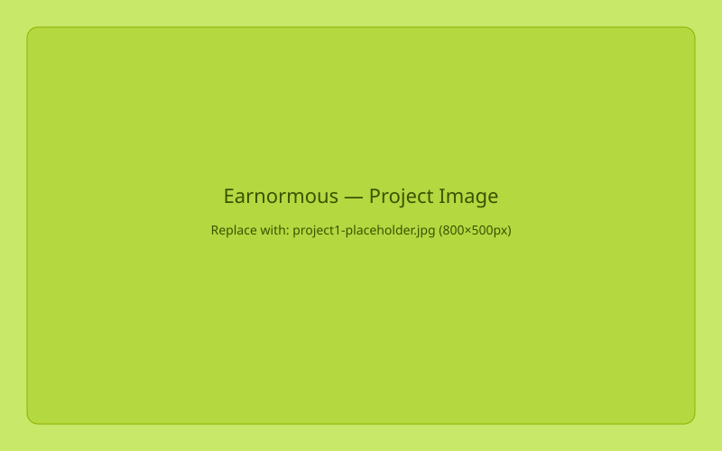
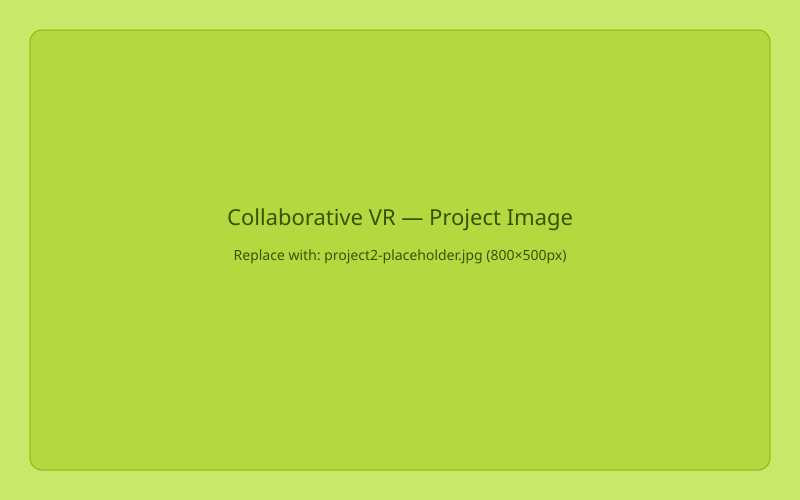
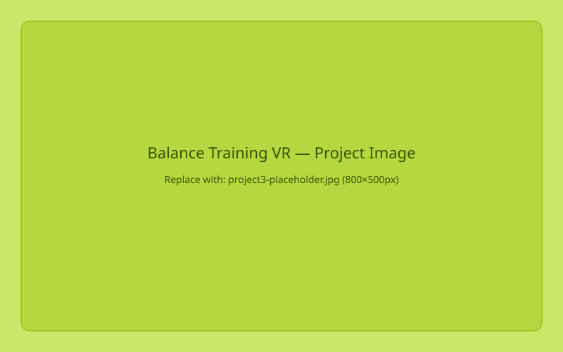

Combining medialogy, VR research, and graphic design to create thoughtful, tested digital products.


VR AppA gamified VR application teaching children about the anatomy and function of the human ear. Users explore the ear from the inside, completing story-driven quests to learn through play. Designed for engagement, accessibility, and educational clarity.

Master's ThesisMaster's thesis project: a shared virtual workspace where VR headsets and tablets connect over the internet to co-design 3D spaces in real time. Built in Unity, the system bridges physical and digital collaboration for multi-stakeholder design sessions.

Clinical ResearchA VR balance training application developed in collaboration with physiotherapists at Gentofte Hospital. Designed with and for elderly users, addressing specific rehabilitation needs through user testing, iterative prototyping, and clinical co-design with CHBC at Rigshospitalet.
MSc in Medialogy. Worked as a research assistant designing, building and evaluating complete VR experiences in collaboration with clinical stakeholders including CHBC at Rigshospitalet and physiotherapists at Gentofte. I involve real users — elderly, children, clinicians — at every stage of the design process.